seed
Rutina
RoutineGenerator.seedOf mezcla id, equipo, nivel y objetivo. generate devuelve siete sesiones.
Entrenamiento y nutrición que se arman con tu deporte, tu equipo y lo que te gusta comer. Un asistente que responde con tus datos. Una comunidad que celebra el avance.
La captura es la puerta real: correo, Google o cuenta local.
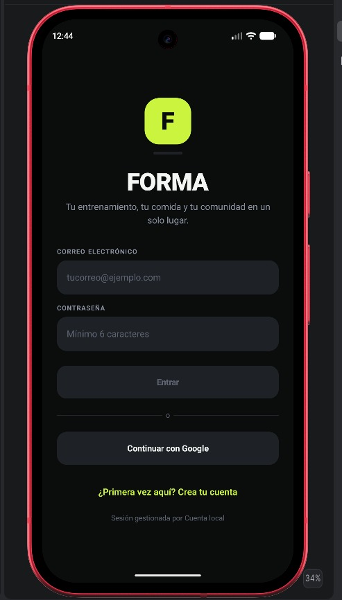
La personalización no es un prompt al azar. Es una función pura del perfil: deporte, nivel, objetivo, equipo e ingredientes. Cambias un dato y cambia la semana. No cambias nada y el lunes sigue siendo el mismo lunes.
RoutineGenerator.seedOf mezcla id, equipo, nivel y objetivo. generate devuelve siete sesiones.
MealPlanGenerator.optionsFor puntúa recetas por ingredientes favoritos y cercanía calórica.
LocalCoach.answer reconoce la pregunta y responde con peso, IMC y calorías del perfil.
Del gym al boxeo.
Filtrados por tu equipo.
Con macros e ingredientes.
Los que marcas como tuyos.
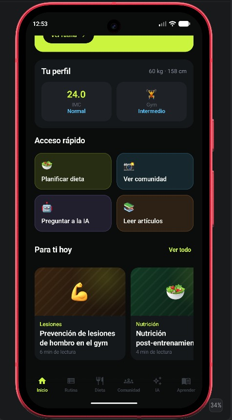
RootViewModel pasa de NeedsAuth a NeedsOnboarding. OnboardingViewModel.next guarda el perfil al final.
Frida González, 21 años, 60 kg, 158 cm, ganar músculo.
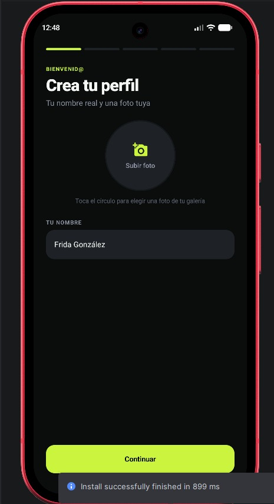
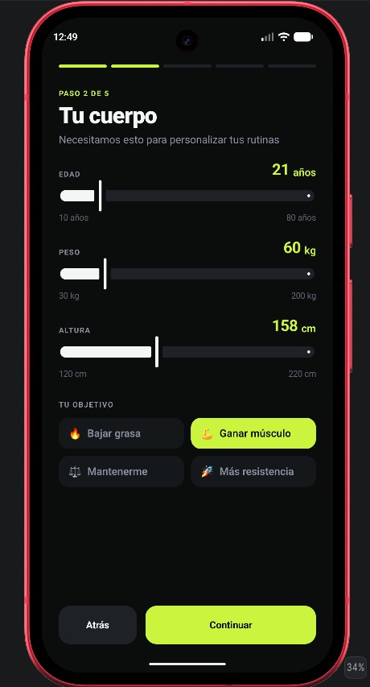
onSport tira las máquinas anteriores y carga EquipmentCatalog.defaultSelection. En gym hay que marcar al menos una pieza.
Intermedio, gym, 18 máquinas. selectAllEquipment y clearEquipment están en Todo y Ninguno.
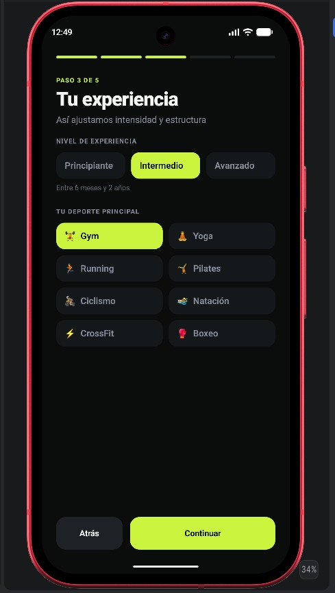
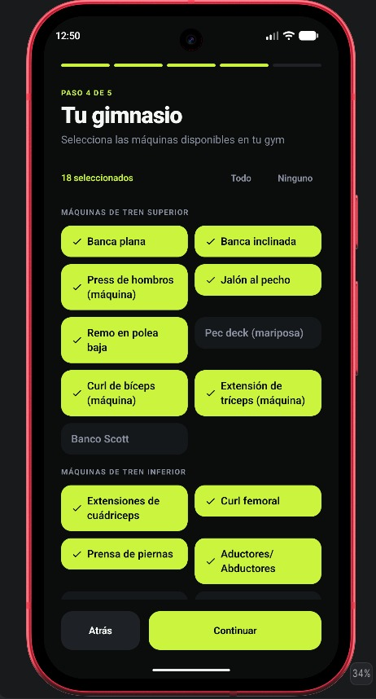
toggleIngredient pide al menos tres alimentos. next guarda el UserProfile con onboardingCompleted.
Aguacate, aceite de oliva, almendras, crema de cacahuate, chía, plátano, fresas, arándanos, manzana, mango y limón. Ese conjunto es el que optionsFor va a premiar.
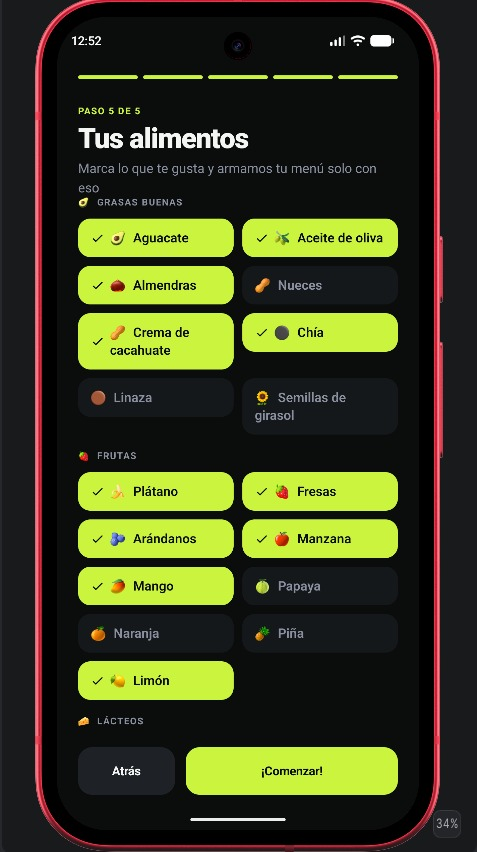
Saludo, racha, entreno de hoy, IMC y artículos. HomeViewModel
Checks, cronómetro y cierre con foto. RoutineViewModel
Cuatro comidas y cinco opciones. DietViewModel
Like, reacciones, seguir y publicar. CommunityViewModel
Preguntas sugeridas y chat con tu perfil. AiViewModel
Artículos, buscador y guardados. LearnViewModel
navigateToTab conserva el estado de cada pestaña. La barra se ve en todas las capturas de aquí en adelante.
todayWeekDay y greeting arman el saludo. HomeViewModel junta perfil, stats, artículos y la sesión de hoy.
60 kg · 158 cm. IMC 24.0, Normal. Gym, intermedio. Abajo, los artículos de hombro y de nutrición post-entreno, los mismos del catálogo.
bmi y bmiLabel viven en el modelo, no escritos a mano en la pantalla.
Jueves de hombro, nivel intermedio: cuatro ejercicios, 6-8 en el compuesto y descanso de 120 s. toggleExercise guarda el check y llama startTimer.
A la derecha, flexiones pike hechas y 1:50 de descanso. El timer corre en el ViewModel.
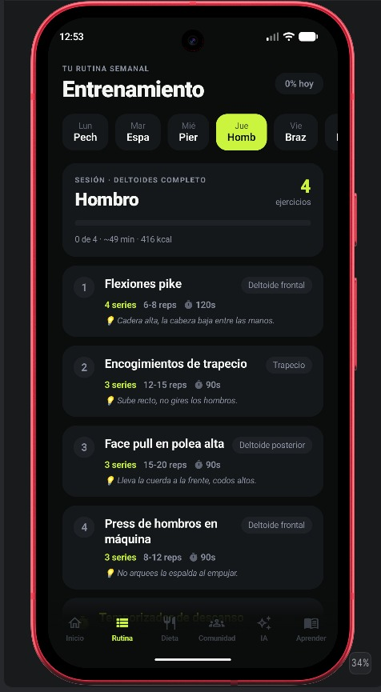
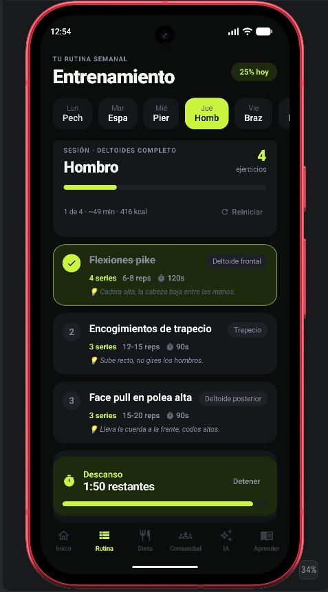
Con 60 kg, 158 cm, 21 años, intermedio y ganar músculo, dailyCalories da 2610 kcal y proteinTargetG da 120 g. Es el número que la app escribe como objetivo.
Cambiar el desayuno a chilaquiles baja el día de 1970 a 1790 kcal. Eso es chooseOption.
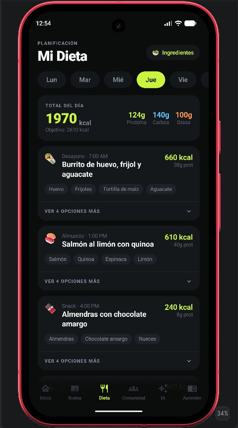
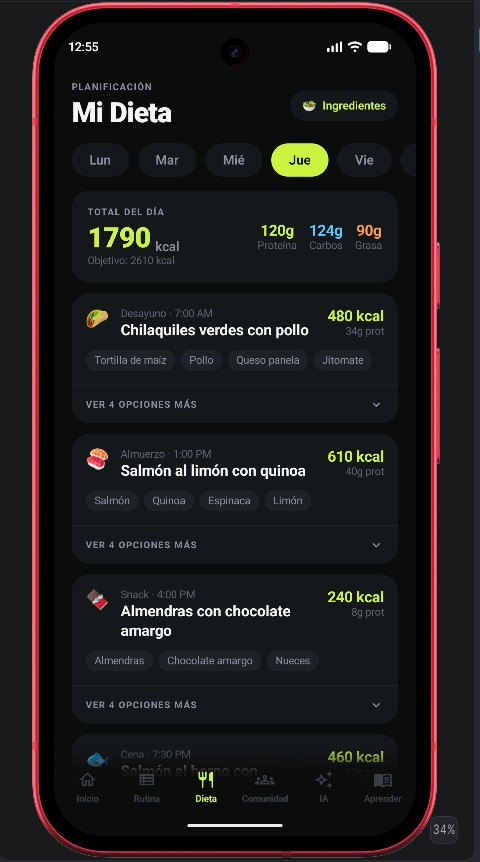
El burrito trae 660 kcal, 38 g de proteína y cuatro pasos. setPlatePhoto guarda la imagen solo para ti, en el historial de comidas.
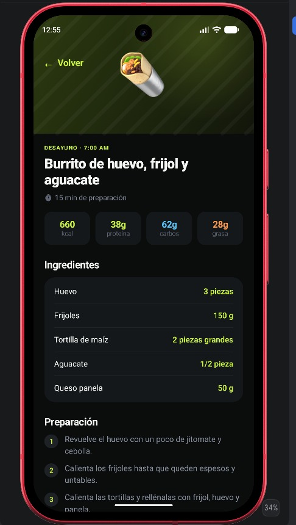
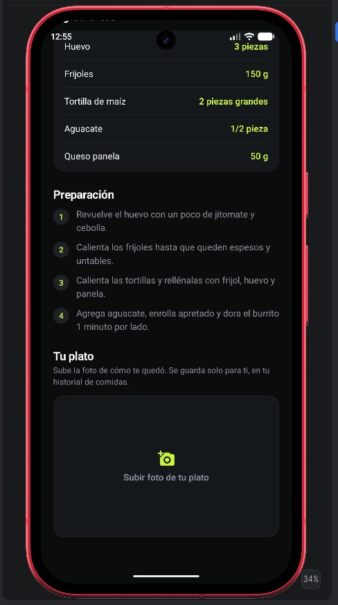
Like, cinco reacciones, seguir y publicar. El hilo de comentarios queda fuera del producto.
María G. en yoga, hace 24 min, con fuego, fuerza y aplauso. Carlos aparece debajo. El filtro de arriba es selectSport. Seguir es toggleFollow.
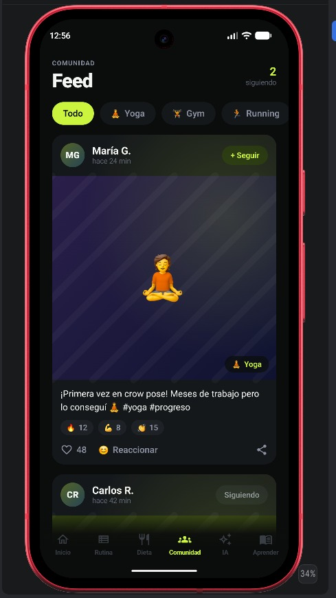
La captura saluda a Frida y dice «FORMA local». Las seis preguntas son LocalCoach.suggestedQuestions, tal cual.
AiRepository genera rutina, comidas y chat. RemoteAiRepository.answer cae al coach local si no hay llave o la red falla. ChatRepositoryImpl.send guarda el hilo en Room.
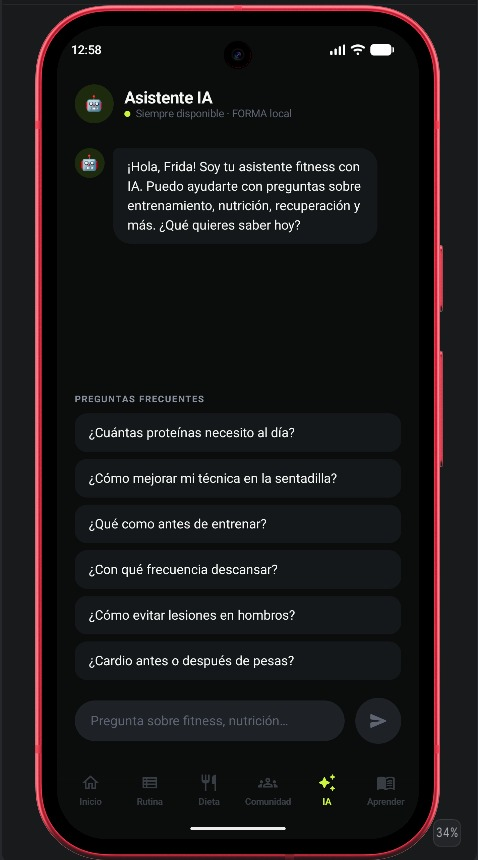
selectCategory filtra. onQueryChange busca. La sentadilla está destacada; Técnica deja solo esa familia.
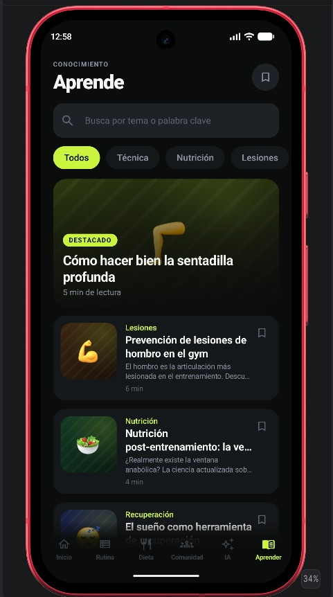
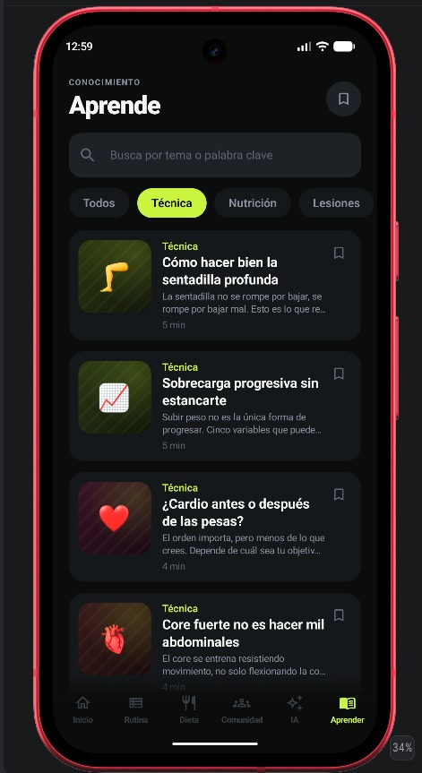
Manguito rotador, calentamiento con banda, equilibrio push/pull y señales de alarma. ArticleViewModel.toggleSaved persiste el marcador de arriba a la derecha.
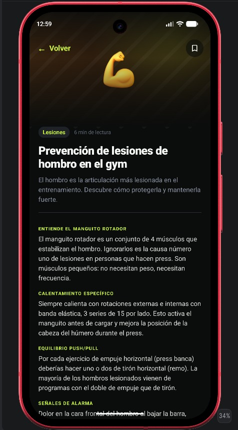
ProfileViewModel actualiza foto, medidas y objetivo. El descanso de 90 s es setRestSeconds. El interruptor es setReminders. Cerrar sesión llama signOut.
La meta diaria que muestra el perfil es 2610 kcal y 120 g de proteína.
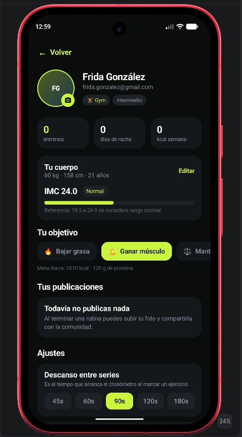
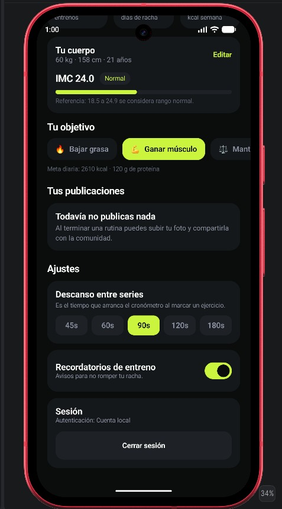
Estado unidireccional: el repositorio expone Flow, el ViewModel lo reduce a StateFlow, Compose lo recoge con collectAsStateWithLifecycle.
76 archivos Kotlin · cerca de 13 800 líneas · JDK 17 · minSdk 26 · compileSdk 35.
AuthRepository entrar, crear cuenta, Google, salir.
ProfileRepository current, save, updatePhoto.
TrainingRepository weeklyRoutine, setExerciseCompleted, finishWorkout.
NutritionRepository dayPlan, chooseOption, setPlatePhoto.
CommunityRepository feed, toggleLike, react, publish.
ChatRepository send · AiRepository answer.
RoutineGenerator.generate siete días, solo equipo marcado.
MealPlanGenerator.optionsFor cinco recetas por comida.
LocalCoach.answer dieciséis intenciones con el peso real.
FormaCloudStore pull y upsert. NoOpCloudStore si no hay Firebase.
UserProfile.dailyCalories Mifflin–St Jeor × actividad + calorieShift.
Perfil, ejercicios marcados, sesiones, comidas, autores, posts, chat y artículos guardados. FormaPreferences guarda la sesión local, los segundos de descanso y los recordatorios que se ven en Ajustes.
CloudSyncManager hace pull al entrar y push en cada guardado. isOwner cierra users/{uid}. El feed de posts es lo público. ImageStore.persist copia la foto al teléfono.
En las capturas, Cerrar sesión y «Autenticación: Cuenta local» son este camino sin google-services.json.
| Prueba | Qué fija |
|---|---|
| RoutineGeneratorTest | 7 días, determinismo, equipo permitido, un plan por deporte |
| MealPlanGeneratorTest | 5 opciones, meta calórica, rotación, gustos |
| LocalCoachTest | Usa el peso real, ignora acentos, nunca responde vacío |
| NoOpCloudStoreTest | La nube apagada no rompe el contrato |
Kotlin 2.0.21 · Compose BOM 2024.12 · Hilt 2.52 · Room 2.6.1 · Firebase BOM 33.7. Release con minify. El comando es ./gradlew test.
La propiedad que importa: el mismo perfil devuelve el mismo plan. Por eso la semana de hombro de Frida se puede repetir.
Android Studio, JDK 17, API 26+. ./gradlew installDebug
google-services.json y las reglas de firebase/.
Ata RemoteAiRepository y define FORMA_AI_API_KEY.
Un perfil. Una semana. Un plato. Una comunidad breve. Un coach que contesta aunque el mundo esté offline.